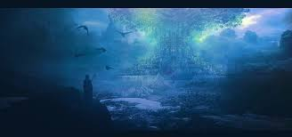
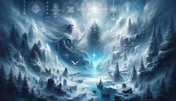
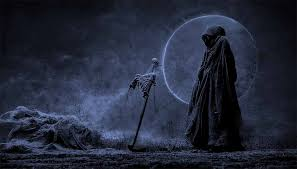
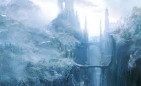
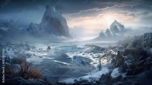

Niflheim
Reino de hielo y niebla::
Niflheim es un lugar frío y desolado, lleno de niebla, hielo y oscuridad. Se describe como el opuesto de Muspelheim, el reino del fuego, simbolizando las fuerzas elementales del frío y la inercia.
Rol en la creación del cosmos:
Niflheim es uno de los dos mundos primordiales, junto con Muspelheim. En el vacío de Ginnungagap, el hielo de Niflheim y el calor de Muspelheim se encontraron, lo que dio origen al gigante primordial Ymir y a la vaca cósmica Auðumbla. Esta interacción simboliza el equilibrio entre las fuerzas opuestas que dio origen al cosmos.
Arquitectura y paisajes:
Niflheim está lleno de ríos helados, glaciares y niebla perpetua. Uno de sus ríos más importantes es Élivágar, cuyas aguas tóxicas y heladas fluyen hacia el Ginnungagap. Es un lugar inhóspito, sin vida ni calidez.
Hvergelmir: la fuente primordial:
En el corazón de Niflheim se encuentra Hvergelmir, un manantial cósmico que es el origen de todos los ríos del universo. Hvergelmir también está relacionado con las raíces del árbol del mundo, Yggdrasil, y se considera un símbolo de creación y flujo eterno.
Relación con Helheim:
Niflheim está conectado con Helheim, el reino de los muertos gobernado por Hel, hija de Loki. Aunque a veces se usan indistintamente, Niflheim se refiere al reino primordial del hielo, mientras que Helheim es el lugar donde van las almas de los muertos que no murieron en batalla.
Rol en la cosmología:
Niflheim está presente desde el principio de los tiempos y permanece como un recordatorio de las fuerzas elementales que crearon y sostienen el universo. Su existencia es crucial para el equilibrio del cosmos.
Simbolismo
Hielo primordial: Representa la quietud y el frío inerte que precede a la creación. Desolación y eternidad: Es un reino desolado y eterno, simbolizando lo inmutable y lo primordial. Equilibrio cósmico: Junto con Muspelheim, simboliza las fuerzas opuestas que forman el cosmos.